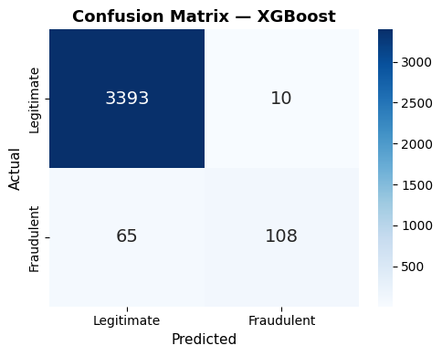
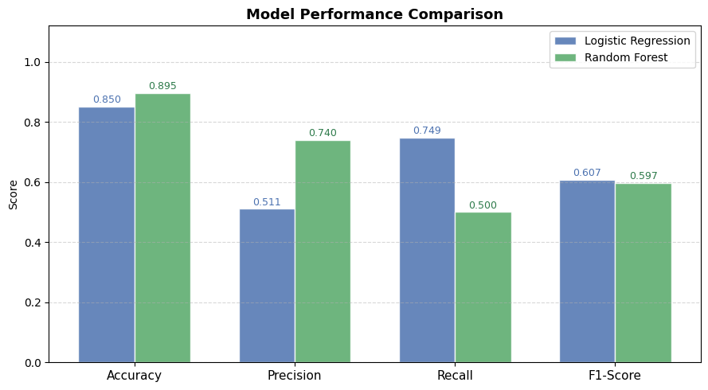
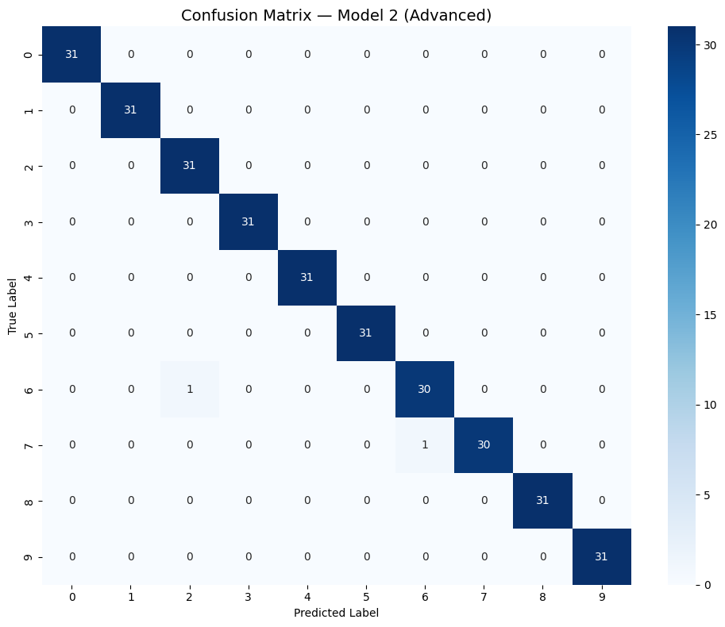
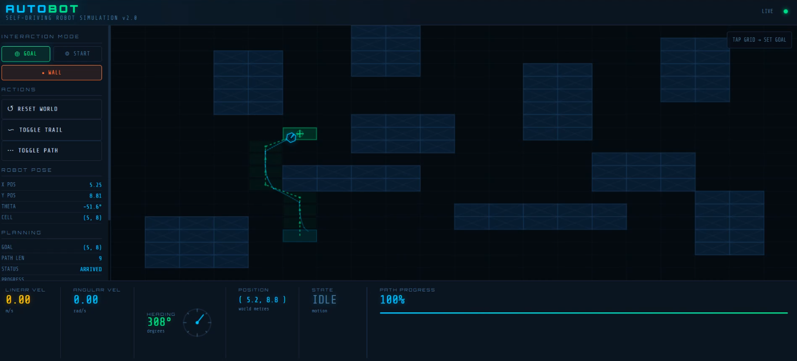
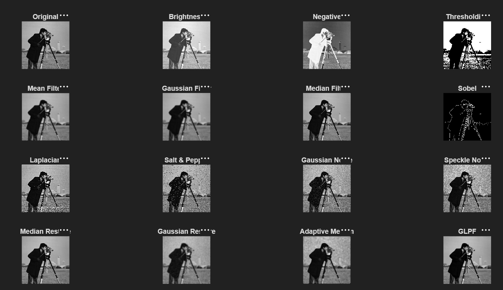
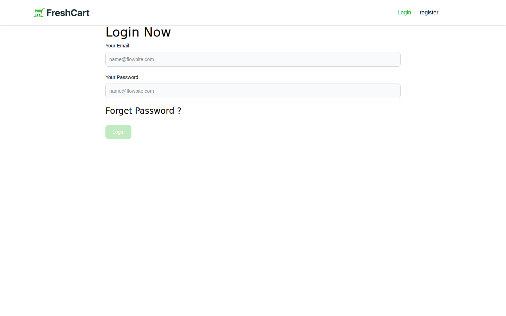
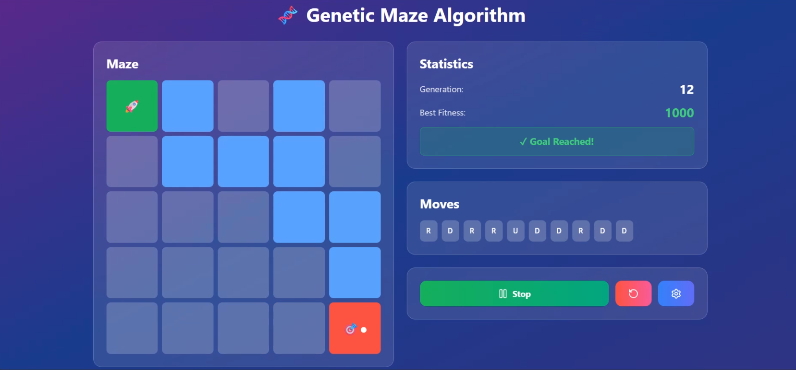
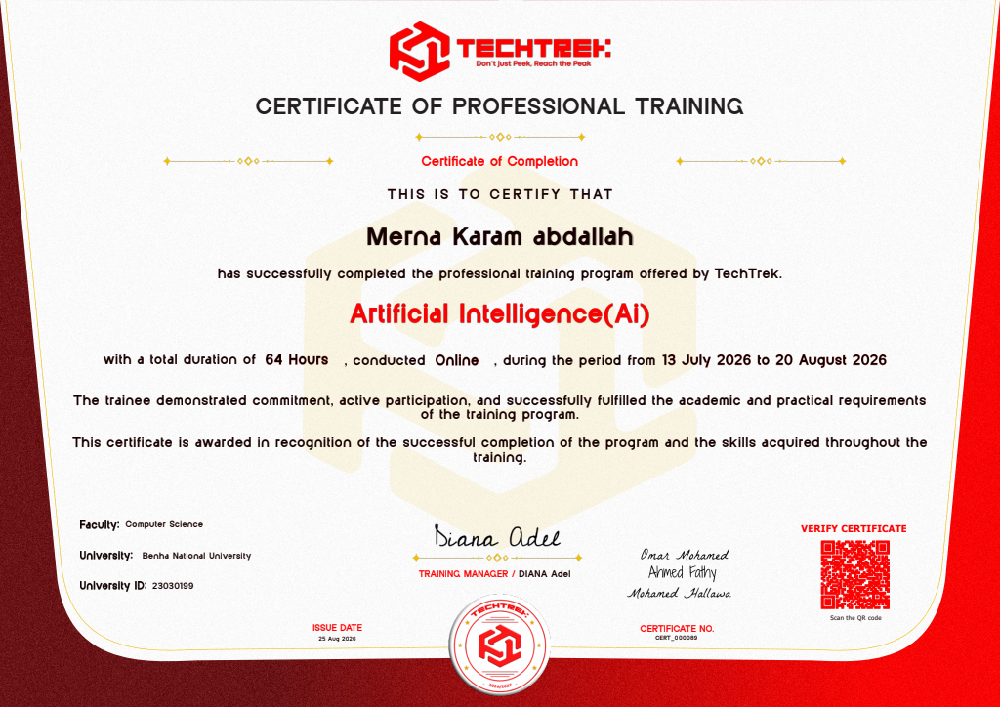
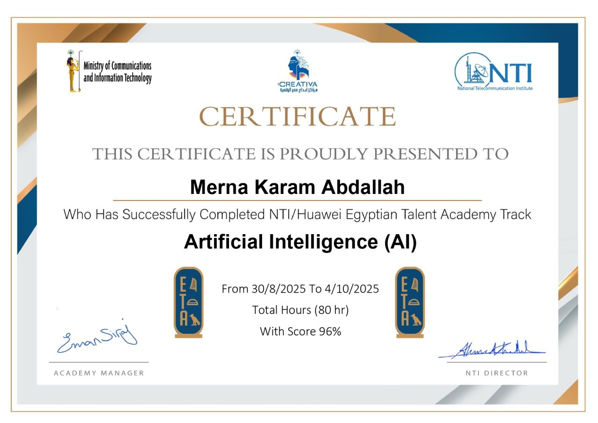
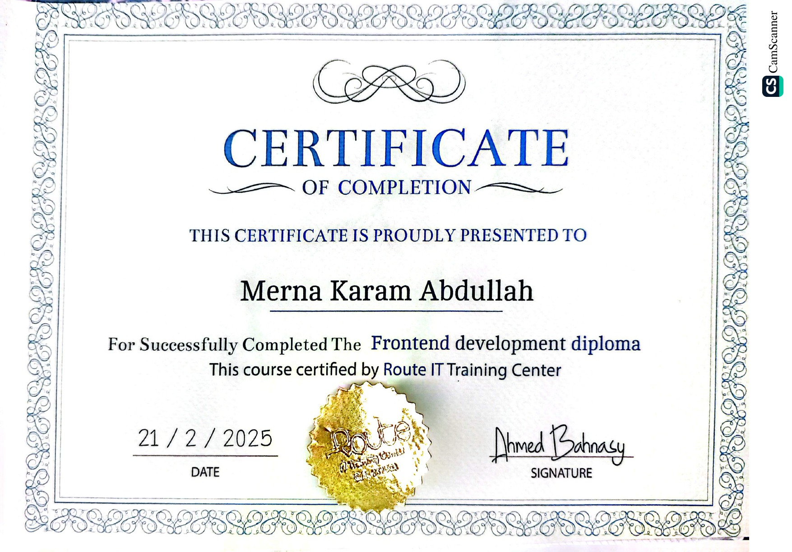

Advanced
Python & Data
Python · Pandas · NumPy · Data Analysis
AI ENGINEERING · MACHINE LEARNING · DATA SCIENCE
I'm Merna Karam Abdallah — an aspiring AI Engineer building practical solutions across Machine Learning, Deep Learning, NLP, Computer Vision, and Robotics.
01 — PROFILE
I have a strong foundation in Computer Science and Artificial Intelligence from Benha National University, with a GPA of 3.66/4.00.
My experience covers the Machine Learning pipeline — from data preprocessing and feature engineering to model training, hyperparameter tuning, and evaluation.
I enjoy solving practical problems with data and experimenting with models across NLP, Deep Learning, Computer Vision, Robotics, and Data Science.
02 — STACK
Python · Pandas · NumPy · Data Analysis
Scikit-learn · Feature Engineering · Evaluation · Tuning
Neural Networks · CNN · TensorFlow
Text Preprocessing · Tokenization · Text Classification
OpenCV · Image Processing · Image Classification
SQL · Probability · Linear Algebra · Descriptive & Inferential Statistics
Autonomous Systems · Self-Driving Robot Simulation
HTML · CSS · JavaScript · Git · GitHub · Colab · Jupyter
03 — SELECTED WORK
Applied work across classification, prediction, vision, and autonomous systems.

Designed an NLP classification system using text preprocessing, tokenization, feature extraction, and multiple ML classifiers.

End-to-end ML pipeline for customer purchase behavior with preprocessing, feature engineering, statistical analysis, training, and evaluation.

CNN built in TensorFlow for sign language digit classification, with architecture and hyperparameter iteration.

Sensor-based autonomous navigation simulation with environmental data processing for real-time movement decisions.

Image analysis project applying image processing and transformation techniques with Python and OpenCV.

Full front-end e-commerce web app with authentication, product browsing, cart, wishlist, and checkout flow.

Maze-solving agent built with a genetic algorithm, evolving move sequences across generations toward the goal.
04 — EXPERIENCE
Training in applied Machine Learning as part of the Digital Egypt Pioneers Initiative.
Hands-on training in preprocessing, feature engineering, model training, evaluation, Machine Learning, and Artificial Intelligence.
Training covering data preprocessing, data analysis, Machine Learning, Deep Learning, and Computer Vision.
Cairo, Egypt · Fourth Year · GPA 3.66/4.00
05 — CERTIFICATIONS

Professional training · Online

Applied training program, not a certification exam

Route IT Training Center
Training / Course
Looking for opportunities in AI, Machine Learning, or Data Science where I can turn technical knowledge into real-world impact.
06 — CONTACT
Open to AI/ML opportunities, collaborative projects, and conversations around AI and Machine Learning.